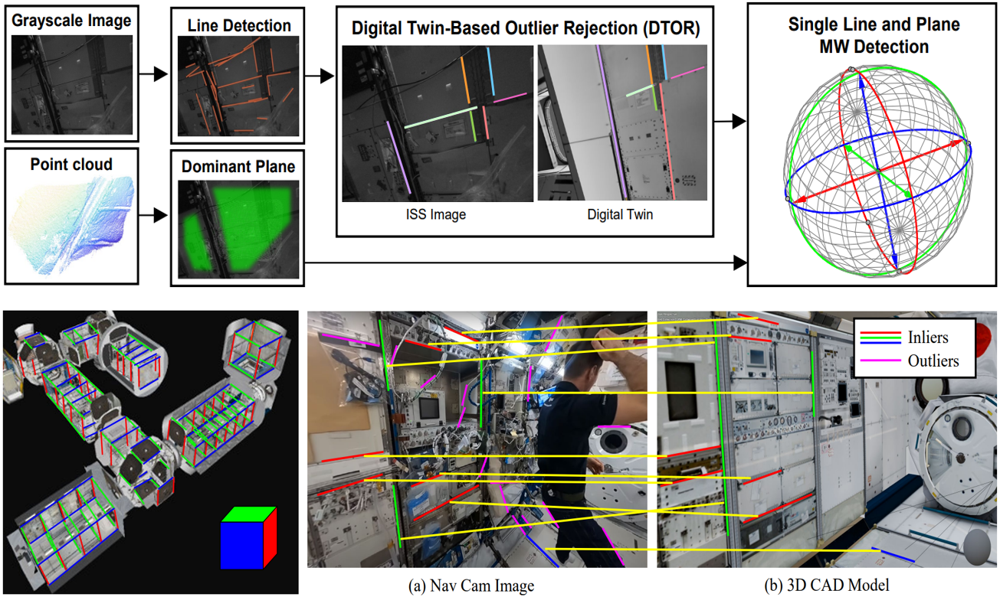
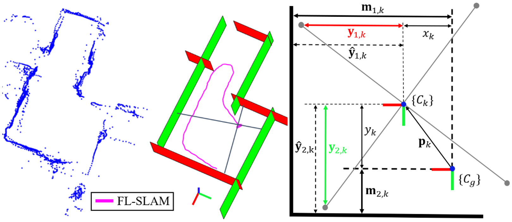

|
Suyoung Kang I'm a Ph.D student at the UMass Amherst, affiliated with the HCR Lab. I've received the PAMI Young Researcher Award. |
{kind=link}
Publications |

|
Astrobee ISS Free-Flyer Datasets for Space Intra-Vehicular Robot Navigation Research
Suyoung Kang, Ryan Soussan, Daekyeong Lee, Brian Coltin, Andres Mora Vargas, Marina Moreira, Kathryn Hamilton, Ruben Garcia, Maria Bualat, Trey Smith, Jonathan Barlow, Jose Benavides, Eunju Jeong, Pyojin Kim IEEE Robotics and Automation Letters (RA-L), 2024 project page / paper |
|  |
San Francisco World: Leveraging Structural Regularities of Slope for 3-DoF Visual Compass
Jungil Ham, Minji Kim, Suyoung Kang, Kyungdon Joo, Haoang Li, Pyojin Kim IEEE Robotics and Automation Letters (RA-L), 2024 project page / paper |
|  |
Linear Four-Point LiDAR SLAM for Manhattan World Environments
Eunju Jeong, Jina Lee, Suyoung Kang, Pyojin Kim IEEE Robotics and Automation Letters (RA-L), 2023 paper |

|
Complex-Motion NeRF: Joint Reconstruction and Pose Optimization With Motion and Depth Priors
Hyunjin Kim, Daekyeong Lee, Suyoung Kang, Pyojin Kim IEEE Access, 2023 paper |
Patent |
|
Urban air mobility aerial wireless charging system with magnetic resonance charging method |
Education |
|
MS/Ph.D. in Computer Science, University of Massachusetts Amherst
B.S. in Electronics Engineering, Sookmyung Women's University |
|
Feel free to steal this website's source code. Do not scrape the HTML from this page itself, as it includes analytics tags that you do not want on your own website — use the github code instead. Also, consider using Leonid Keselman's Jekyll fork of this page. |